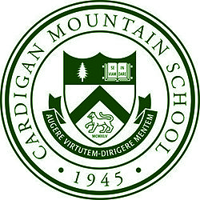

Yes, my name does have 2 S's.
I went to public school up until 7th grade. I then moved on to Cardigan Mountain School. After studying for two years there, I moved on to Phillips Andover. I am currently a junior at Andover.